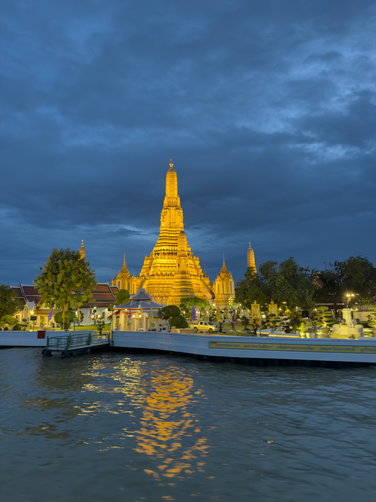

VIETNAM
Beyond the itinerary.
Landscapes, local knowledge and the details that make a journey memorable.
Original photography and film to help Asiana Travel and its agency partners bring Southeast Asia’s tailor-made journeys to life.
EXPLORE THE PROPOSAL ↘A collection of images built around the actual experiences your team designs and your travel partners sell.
From culture and local encounters to coastlines, nature and stays, we can create fresh photography and video that brings your itineraries to life across your website, presentations and marketing campaigns.
Selected photographs from Juan’s own travels, showing the visual approach we could develop further for Asiana’s itineraries.
Landscapes, local knowledge and the details that make a journey memorable.

Iconic places, everyday life and experiences worth travelling for.
We can produce imagery for selected routes or develop a complete campaign with your team, shaped around the destinations and experiences you want to promote.
Photography and film of the places, activities, accommodation and local encounters that define selected Asiana journeys.
A cohesive collection for your team and agency partners to use in destination presentations, travel proposals and marketing, under an agreed licence.
Use the imagery for your own campaign, or work with us on a creative concept and production tailored to your commercial priorities.
I’m Juan Aizpuru, a photographer and filmmaker who has travelled and photographed in Southeast Asia. Together with your team and local guides, we can plan a production around the journeys you want to promote.
We select the routes, audiences and travel products that matter most to your team and agency partners.
We work with your local team to photograph and film the destination, from landscapes and activities to the people behind the experience.
We agree on the final material, formats and licensing for your intended channels and partners. The scope and production schedule are tailored to the project.
I’d love to hear which destinations and experiences Asiana Travel wants to develop, and explore how a visual production could support your team.
VIEW JUAN’S WORK ↗